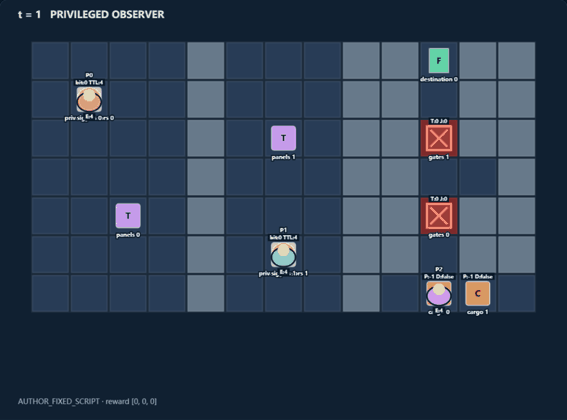
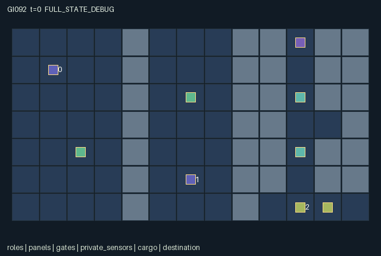

GI092 / SPATIAL
交叉信号闸
两名操作员各掌握一份局部传感信息，却需要对方的信号来开门，货运员负责通行。
Original saved demonstration
Recorded native state, often authored scripts or interventions; information scope and failures are preserved in the original provenance. This is a saved demonstration, not live browser play.

Release verification episode
Untrained uniform legal actions. Actual JAX state sampled along the full original episode; full-state debug camera. No human performance or learning claim.

Run this game
crucibles play --game 92
Start Python locally, then open the address printed by the terminal. Installation, multiplayer, takeover and keyboard controls →
Objective, rewards & ending
Exact task contract
{
"objective": "Deliver both physical cargo objects from the east loading bay to the northern goal, using two cross-wired remote gate operators and brief binary broadcasts.",
"natural_termination": "All two cargo objects delivered ends naturally. Each delivery gives every role +0.5 and the final delivery adds +0.5. Otherwise truncate at step 128. Deliveries redraw both private sensor bits and close both gates.",
"interaction": "Sensor 0's bit is required at role 1's panel; sensor 1's bit is required at role 0's panel. Only local owners can directly read a sensor. A correct remote pulse opens the corresponding courier gate for six steps; a wrong pulse closes it and jams its operator. Binary messages change what other roles observe for four frames.",
"observation_access": "Map, role positions, panel attempts, cargo, gate timers, pulse energy, cooldowns and live broadcasts are public. Sensor values are masked to -1 unless the querying role is that sensor's owner and within Manhattan distance one. Role 2 never directly observes either bit. The sensor entity visibility uses exactly the same stored code_visible mask. Expired signal entities are inactive and their observation values are -1."
}Declared per-step reward bounds: -1 to 1. Observability: partially_observable.
Rules
- Role 0 reads sensor 0 only nearby, but its panel needs sensor 1's bit. Role 1 reads sensor 1 nearby, but its panel needs sensor 0's bit.
- Walls separate both operators and the courier. Operators can move, read, send and pulse; only the courier can carry cargo.
- Broadcast bit 0 or 1 for four steps; sending has a three-step cooldown and replaces movement for that turn.
- A correct panel pulse costs one energy and opens its distant gate for six steps. Wrong pulses close it and jam the panel for two steps.
- Delivering cargo redraws both clues, clears broadcasts and closes gates. Deliver both cargo objects before step 128.
Original mechanism document (historical status wording retained)
# Lumen Locks: Cross-Wired Signals
Status: **AUTHORED_NOT_EXECUTED**. Candidate `game-v3-00092`, attempt 00; train-only prospective source. A/O/U/H = 3/154/10/128. Source SHA256: `6c3f3acbcd8f41c155ff02f5e78f4fa050fcb20678cb50867b5cba45e22b5155`.
Original three-role signal-routing and delivery world. A west surveyor and middle keeper hold different local clues but operate each other's keyed remote gate. A courier must physically carry two objects through the east corridor. No single role can reach all jobs.
## Literal rules and transition order
1. The static 13 by 7 map has a west room x=0..3, a middle room x=5..7 and an east courier corridor along x=10, with a loading bay across x=9..12 at y=6 and a small alcove at (11,3). Solid walls separate the roles.
2. Role 0's private sensor is (1,1), its panel (2,4). Role 1's sensor is (6,5), its panel (6,2). Sensor values are independent binary draws from the supplied reset key. Only the corresponding operator within Manhattan distance one receives the value; other roles and distant owners receive -1 with visibility false.
3. Every in-range action is a legal attempt while live. Wrong-role actions, unavailable panel/cargo actions and blocked moves do nothing. Invalid IDs become wait. After joint completion only wait is legal. All three agents remain active until joint completion.
4. Directional movement checks the previous state's gate_open flag, static walls and other roles' old occupancy. A correct pulse therefore opens entry for later raw calls, not retroactively on the current simultaneous move. An occupant may exit a gate cell after closure.
5. Signals are public one-bit observations with identity preserved by sender slot. Sending requires pre-step cooldown zero, sets lifetime four and cooldown three, and uses the action that otherwise could move or operate. Lifetimes decay each step. Expired values are -1 in observations, and signal entities become inactive.
6. At panel i, operator i can pulse bit zero or one if it has energy and the old jam timer is zero. The required bit is code_value[1-i]. Correct pulses set open timer six; wrong pulses set timer zero and jam two. Every accepted pulse costs one energy. Waiting exactly on one's own sensor restores one energy up to four.
7. Only role 2 can pick a colocated undelivered cargo with action 9. Holding cargo follows its real position. The same action releases it; release at (10,0) marks it delivered, elsewhere it becomes a ground object. Each delivery draws new private bits from the supplied step key, clears message lifetimes and closes gates. Draws on non-delivery steps are discarded.
8. Public correctness feedback permits a costly probing strategy; privacy is not a claim that brute force is impossible. Gate/cargo positioning, energy replenishment travel, clue changes and short opening windows make timely communication a plausible alternative. No omniscient role can do all physical jobs.
## Cross-agent consequences and untested paired interventions
- Changing a nearby operator from wait to broadcast changes the other roles' input for four frames while consuming the sender's movement turn. Its teammate can use that information at the cross-wired panel.
- Holding the courier action fixed, changing a correctly keyed panel pulse changes whether the courier can enter its gate on subsequent calls. A wrong pulse removes that opportunity and introduces a two-step lockout.
- A courier delivery changes both operators' private tasks by redrawing clues and closing gates, so repeating a memorized initial pulse is not a guaranteed second delivery strategy.
These are consequences derived from source inspection and proposed intervention traces. No paired-action execution or strategic-richness acceptance has been performed by the author.
## Partner-dependent strategies and possible variation
Unmeasured possibilities include exchanging clues before departing sensors, storing received bits while moving to panels, staggered gate opening synchronized to courier progress, or resource-costly panel probing. Courier progress signals compete with carrying movement; stale remembered messages are hazardous after a delivery.
Future separately authorized variants could alter code alphabets, message lifetime, corridor length, pulse duration or cross-wiring. They would test different information and timing requirements, but this package claims neither learned communication nor transfer.
## Information, rendering and invariants
Map, role positions, panel attempts, cargo, gate timers, pulse energy, cooldowns and live broadcasts are public. Sensor values are masked to -1 unless the querying role is that sensor's owner and within Manhattan distance one. Role 2 never directly observes either bit. The sensor entity visibility uses exactly the same stored code_visible mask. Expired signal entities are inactive and their observation values are -1.
The scene contains no executable rendering code. Its world, entity groups, attribute labels, event semantics, actions and observation labels are copied from this package's own manifest declarations. Visible positions bind directly to state arrays used in transitions. Inactive delivered objects are hidden as declared; the privileged debug state must be labelled separately from each role view. Events are last-transition flags, not cumulative event counts. The absorbing terminal keeps the final flags frozen; a repeated terminal call is not a newly occurring game event.
All positions are within x=0..12,y=0..6; roles have unique positions. Energy 0..4, cooldown 0..3, gate timer 0..6, jam 0..2, bit values 0..1, signal lifetime 0..4; hidden observation sentinel -1. Cargo owner is -1 or 2. Per-role reward is 0, 0.5 or 1; observations stay in [-1,1].
All integer state fields use int32, all logical leaves bool, and returned observations/rewards float32. No key is duplicated in state. Only reset and successful-delivery clue redraws use the supplied PRNG keys; non-delivery draws are discarded. Normalization uses powers of two. These are design and source properties, not an eager/JIT parity receipt.
## Terminal and integration contract
A live input increments scalar int32 t exactly once. Natural completion takes priority on the horizon: truncated is (next_t >= H) AND NOT terminated. episode_done equals terminated OR truncated. A terminal input returns the identical state/observation/clock, zero rewards, all dones true and the preserved natural/truncated cause. There is no reset inside raw_step. A trusted outer wrapper owns reset. Native learning receives only observe(state) and legal_actions(state).
The kernel is the homogeneous array boundary. A community JaxMARL dictionary adapter with per-agent dictionaries and __all__ is a separate coordinator-owned integration layer; its existence or correctness is not asserted by this source package. Completed individual deliveries do not remove a role from the joint action interface.
## Source line evidence
`candidate.py`, lines 17-21 (separated_roles_and_private_clues):
```python
# EVIDENCE: separated_roles_and_private_clues
terrain = jnp.ones((7, 13), dtype=jnp.int32)
terrain = terrain.at[:, 0:4].set(0)
terrain = terrain.at[:, 5:8].set(0)
terrain = terrain.at[:, 10].set(0)
```
`candidate.py`, lines 74-78 (role_observation_and_signal_lifetime):
```python
# EVIDENCE: role_observation_and_signal_lifetime
private_codes = jnp.where(state["code_visible"], state["code_value"][None, :], -1).astype(jnp.float32)
public = jnp.concatenate((
state["agent_pos"].reshape(-1).astype(jnp.float32) / 16.0,
state["energy"].astype(jnp.float32) / 4.0,
```
`candidate.py`, lines 113-117 (limited_causally_effective_messages):
```python
# EVIDENCE: limited_causally_effective_messages
signal_ttl = jnp.maximum(state["signal_ttl"] - 1, 0)
cooldown = jnp.maximum(state["signal_cooldown"] - 1, 0)
send = ((a == 7) | (a == 8)) & (state["signal_cooldown"] == 0)
signal_value = jnp.where(send, a - 7, state["signal_value"])
```
`candidate.py`, lines 121-125 (cross_wired_remote_gates):
```python
# EVIDENCE: cross_wired_remote_gates
gate_timer = jnp.maximum(state["gate_timer"] - 1, 0)
jam = jnp.maximum(state["jam"] - 1, 0)
energy = state["energy"]
at_sensor = jnp.concatenate((jnp.all(pos[:2] == state["code_pos"], axis=1), jnp.array([False])))
```
`candidate.py`, lines 143-147 (physical_cargo_and_round_change):
```python
# EVIDENCE: physical_cargo_and_round_change
owners = state["cargo_owner"]
carried = owners == 2
had_cargo = jnp.any(carried)
matching = jnp.all(state["cargo_pos"] == pos[2], axis=1) & ~state["cargo_delivered"] & (owners < 0)
```
`candidate.py`, lines 166-170 (natural_priority_absorbing_terminal):
```python
# EVIDENCE: natural_priority_absorbing_terminal
n = dict(state)
n["t"] = state["t"] + 1
n["agent_pos"] = pos
n["energy"] = energy
```
## Supplied community references and originality
- [JaxMARL_README.md](https://github.com/bold-lab-ai/JaxMARL/blob/main/README.md) — Read supplied Quick Start/API text: parallel agent-keyed dictionaries and __all__ are an external adapter target; no upstream environment source or layout copied. Supplied-file SHA256: `6649d04f5ed05d620e78e8416a00d4db841cf2633ae60fdb3c9729e037a71c15`.
- [Pgx_README.md](https://github.com/sotetsuk/pgx/blob/main/README.md) — Read supplied Usage/API v2 text: JAX-native state transitions, explicit legal masks and caller-provided stochastic keys. No board rules, implementation or rendering copied. Supplied-file SHA256: `153f44999e55d5df3e51e13dee6ef418cc9704ddfa26206f1dc5789b9cbbf8df`.
- [Craftax_README.md](https://github.com/MichaelTMatthews/Craftax/blob/main/README.md) — Read supplied description, Basic Usage and reset discussion for spatial resource consequences and environment/algorithm separation. No game mechanics implementation, assets or layout copied. Supplied-file SHA256: `7f9757a2047143cf183f7e2e84851a740f386af80dbee050c89b316d66a3d3ff`.
- [PureJaxRL_README.md](https://github.com/luchris429/purejaxrl/blob/main/README.md) — Read supplied Code Philosophy and overview: single-file end-to-end JAX learning implementations are algorithm references, not a new game library. No learning code imported, copied or run. Supplied-file SHA256: `d5f40182c924a42cec820931e61a7d5070e48c4c8413c7d16455abc6ea0ef6b0`.
Only the supplied static README copies were consulted. The supplied Craftax PPO recurrent baseline was not read or used. Craftax is the game/mechanics reference; Pgx is a discrete-game API reference; PureJaxRL and the unconsulted PPO baseline are algorithm/integration references. No upstream code, benchmark layout, heldout implementation, project result, prior candidate, model call or network request was used. Common interface and terminal code here implements the supplied author contract, not an imported environment.
## Playthrough limits
`playthrough.json` is a fixed, in-range joint-action script with a reset seed. Every in-range attempt is legal while live. A replay driver must stop on done_all; only wait is legal afterward. Objectives and events in that file are intended hypotheses, not observations. The script is not a policy, solvability proof or success certificate. Candidate imports, reset/step calls, validators, JIT/vmap, training and rendering were not executed by this author. Root independently accepts or rejects the entire sealed batch after delivery.
Commands
Roles & abilities
agent_0 West surveyor: sees sensor 0 locally; operates lower gate using sensor 1's clue
agent_1 Middle keeper: sees sensor 1 locally; operates upper gate using sensor 0's clue
agent_2 East courier: moves cargo through both remote gates; sees neither sensor value directly
Observation permissions
Training receives only the original observation rows. Role cameras use declared visibility; debug cameras are explicitly marked. Local benchmark records log debug exposure and role takeover history.
Exact observation layout
[
{
"slice": [
0,
3
],
"meaning": "Own role identity one-hot",
"visibility": "self"
},
{
"slice": [
3,
5
],
"meaning": "Current sensor bits in sensor order, with -1 when inaccessible; own sensor only within Manhattan distance one",
"visibility": "local"
},
{
"slice": [
5,
7
],
"meaning": "Visibility flags for those two sensor-value slots",
"visibility": "local"
},
{
"slice": [
7,
13
],
"meaning": "All role positions xy divided by 16",
"visibility": "public"
},
{
"slice": [
13,
16
],
"meaning": "All pulse energy divided by 4",
"visibility": "public"
},
{
"slice": [
16,
20
],
"meaning": "Both panel positions xy divided by 16",
"visibility": "public"
},
{
"slice": [
20,
22
],
"meaning": "Last attempted panel bits; -1 before any pulse",
"visibility": "public"
},
{
"slice": [
22,
26
],
"meaning": "Gate positions xy divided by 16",
"visibility": "public"
},
{
"slice": [
26,
28
],
"meaning": "Gate open timers divided by 8",
"visibility": "public"
},
{
"slice": [
28,
30
],
"meaning": "Wrong-pulse jam timers divided by 4",
"visibility": "public"
},
{
"slice": [
30,
34
],
"meaning": "Public sensor locations xy divided by 16; values are not included here",
"visibility": "public"
},
{
"slice": [
34,
37
],
"meaning": "Each role's signal bit, or -1 after signal expiry",
"visibility": "public"
},
{
"slice": [
37,
40
],
"meaning": "Signal lifetime divided by 4",
"visibility": "public"
},
{
"slice": [
40,
43
],
"meaning": "Signal cooldown divided by 4",
"visibility": "public"
},
{
"slice": [
43,
47
],
"meaning": "Cargo positions xy divided by 16",
"visibility": "public"
},
{
"slice": [
47,
49
],
"meaning": "Cargo owner plus one divided by 4",
"visibility": "public"
},
{
"slice": [
49,
51
],
"meaning": "Delivered cargo flags",
"visibility": "public"
},
{
"slice": [
51,
53
],
"meaning": "Goal xy divided by 16",
"visibility": "public"
},
{
"slice": [
53,
144
],
"meaning": "Public wall layout flattened yx",
"visibility": "public"
},
{
"slice": [
144,
145
],
"meaning": "Clock divided by 128",
"visibility": "public"
},
{
"slice": [
145,
151
],
"meaning": "Last-step flags: send, correct pulse, wrong pulse, cargo interaction, delivery, clue redraw",
"visibility": "public"
},
{
"slice": [
151,
154
],
"meaning": "Joint done, natural termination, truncation",
"visibility": "public"
}
]Entity visibility & attributes
[
{
"id": "roles",
"kind": "agent",
"count": 3,
"position": [
"agent_pos"
],
"active": [
"agent_active"
],
"visibility": [
"agent_visible"
],
"attributes": [
{
"state_path": [
"energy"
],
"meaning": "Panel pulse energy, max four; courier does not consume this field",
"display": "bar"
},
{
"state_path": [
"signal_cooldown"
],
"meaning": "Remaining steps before another signal may be sent",
"display": "number"
}
]
},
{
"id": "panels",
"kind": "object",
"count": 2,
"position": [
"panel_pos"
],
"active": [
"panel_active"
],
"visibility": [
"panel_visible"
],
"attributes": [
{
"state_path": [
"panel_value"
],
"meaning": "Last attempted panel bit, -1 before any pulse",
"display": "category"
}
]
},
{
"id": "gates",
"kind": "gate",
"count": 2,
"position": [
"gate_pos"
],
"active": [
"gate_active"
],
"visibility": [
"gate_visible"
],
"attributes": [
{
"state_path": [
"gate_timer"
],
"meaning": "Remaining open time in steps",
"display": "bar"
},
{
"state_path": [
"gate_open"
],
"meaning": "Whether entry is currently permitted",
"display": "flag"
},
{
"state_path": [
"jam"
],
"meaning": "Remaining operator lockout after a wrong pulse",
"display": "number"
}
]
},
{
"id": "private_sensors",
"kind": "object",
"count": 2,
"position": [
"code_pos"
],
"active": [
"code_active"
],
"visibility": [
"code_visible"
],
"attributes": [
{
"state_path": [
"code_value"
],
"meaning": "Current bit, visible only to the assigned nearby operator",
"display": "category"
}
]
},
{
"id": "signals",
"kind": "object",
"count": 3,
"position": [
"signal_pos"
],
"active": [
"signal_active"
],
"visibility": [
"signal_visible"
],
"attributes": [
{
"state_path": [
"signal_value"
],
"meaning": "Currently broadcast bit",
"display": "category"
},
{
"state_path": [
"signal_ttl"
],
"meaning": "Remaining visible lifetime of this broadcast",
"display": "bar"
}
]
},
{
"id": "cargo",
"kind": "object",
"count": 2,
"position": [
"cargo_pos"
],
"active": [
"cargo_active"
],
"visibility": [
"cargo_visible"
],
"attributes": [
{
"state_path": [
"cargo_owner"
],
"meaning": "-1 on ground; 2 when held by courier",
"display": "number"
},
{
"state_path": [
"cargo_delivered"
],
"meaning": "Whether this cargo has reached the goal",
"display": "flag"
}
]
},
{
"id": "destination",
"kind": "landmark",
"count": 1,
"position": [
"goal_pos"
],
"active": [
"goal_active"
],
"visibility": [
"goal_visible"
],
"attributes": []
}
]Actual verification & provenance
Per-game execution receipt
{
"game": "gi092",
"status": "PASS",
"verification_revision": 2,
"source_sha256": "6c3f3acbcd8f41c155ff02f5e78f4fa050fcb20678cb50867b5cba45e22b5155",
"seed": 20261101,
"runtime": {
"jax": "0.4.38",
"numpy": "1.26.4",
"devices": [
"TFRT_CPU_0"
]
},
"dimensions": {
"num_agents": 3,
"observation_size": 154,
"num_actions": 10,
"max_steps": 128
},
"checks": {
"eager_reset": {
"status": "PASS",
"seconds": 1.380455732345581
},
"observation_spaces_legal_masks": {
"status": "PASS",
"seconds": 0.24628257751464844
},
"eager_step": {
"status": "PASS",
"seconds": 1.980588436126709
},
"jit_reset": {
"status": "PASS",
"seconds": 0.1487443447113037
},
"jit_step": {
"status": "PASS",
"seconds": 0.4563295841217041
},
"eager_jit_integer_parity_float_measurement": {
"status": "PASS",
"seconds": 0.0010001659393310547
},
"jit_vmap_reset": {
"status": "PASS",
"seconds": 0.3373250961303711
},
"jit_vmap_step": {
"status": "PASS",
"seconds": 0.8102517127990723
},
"outer_autoreset_api": {
"status": "PASS",
"seconds": 0.7899570465087891
},
"full_original_horizon_episode_and_render": {
"status": "PASS",
"seconds": 1.804029941558838
}
},
"human_scores": null,
"browser_controls": "PENDING",
"failures": [],
"elapsed_seconds": 8.456447839736938,
"float_parity_max_abs": 0.0,
"numerical_parity": "EXACT",
"raw_terminal_absorbing": "PASS",
"terminal_outer_reset": "PASS",
"episode_steps": 128,
"scripted_random_returns": [
0.0,
0.0,
0.0
],
"terminal": true,
"demo_information": "FULL_STATE_DEBUG",
"demo_frames": 27,
"render_roles_checked": 3
}Chromium control verification
{
"game": "gi092",
"status": "PASS",
"human_scores": null,
"engineering": true,
"checks": [
"catalog_selected_and_real_native_reset",
"keyboard_native_direction_command",
"dom_queue_and_native_step",
"second_participant_ownership_and_native_joint_step",
"all_roles_individually_controllable_no_role_cap",
"explicit_debug_camera",
"release_to_pure_ai_without_reset",
"close_session_preserves_log"
],
"ui_sha256": "96243f9de144b80b5e20a114330e2206bdcd58d3efc9c6f13bbc08b95cacc14d",
"keyboard_action_id": 1,
"seconds": 4.050535202026367
}Original identity and file hashes
{
"id": 92,
"key": "gi092",
"title": "交叉信号闸",
"summary": "两名操作员各掌握一份局部传感信息，却需要对方的信号来开门，货运员负责通行。",
"tags": [
"私有信息",
"信号协作"
],
"family": "spatial",
"dimensions": {
"num_agents": 3,
"observation_size": 154,
"num_actions": 10,
"max_steps": 128
},
"source_sha256": "6c3f3acbcd8f41c155ff02f5e78f4fa050fcb20678cb50867b5cba45e22b5155",
"manifest_sha256": "f1b23863c68a151f1b3e0607b2eed19190f51e5ebbc5422407734852ae750a4f",
"files": [
{
"file": "candidate.py",
"sha256": "6c3f3acbcd8f41c155ff02f5e78f4fa050fcb20678cb50867b5cba45e22b5155",
"bytes": 10454,
"origin": "work/exp_2/game_incubator_v3/community_games222_225_visualization_root222_v1/native154_candidate/registry/v2/games/game-v3-00092/candidate.py"
},
{
"file": "manifest.json",
"sha256": "f1b23863c68a151f1b3e0607b2eed19190f51e5ebbc5422407734852ae750a4f",
"bytes": 16819,
"origin": "work/exp_2/game_incubator_v3/community_games222_225_visualization_root222_v1/native154_candidate/registry/v2/games/game-v3-00092/manifest.json"
},
{
"file": "scene.json",
"sha256": "affde10f9480dc089502a76454b3266f07116ec2292920617b543805b8b579ab",
"bytes": 8946,
"origin": "work/exp_2/game_incubator_v3/community_games222_225_visualization_root222_v1/native154_candidate/registry/v2/games/game-v3-00092/scene.json"
},
{
"file": "mechanism.md",
"sha256": "84a67259a7ea745b4142dd8c558e2170cabe9c914e108001a245eeba88c2a364",
"bytes": 11650,
"origin": "work/exp_2/game_incubator_v3/sources/game-v3-00092/attempt_00/mechanism.md"
},
{
"file": "playthrough.json",
"sha256": "f604c05a0951beff87184e6bd193827ec35490f7327d41af7bde6446a5bd8f81",
"bytes": 1613,
"origin": "work/exp_2/game_incubator_v3/sources/game-v3-00092/attempt_00/playthrough.json"
}
],
"original_status": "NATIVE154_REFERENCE",
"original_saved_replay": true,
"release_validation": "PASS",
"human_scores": null,
"browser_validation": "PASS"
}